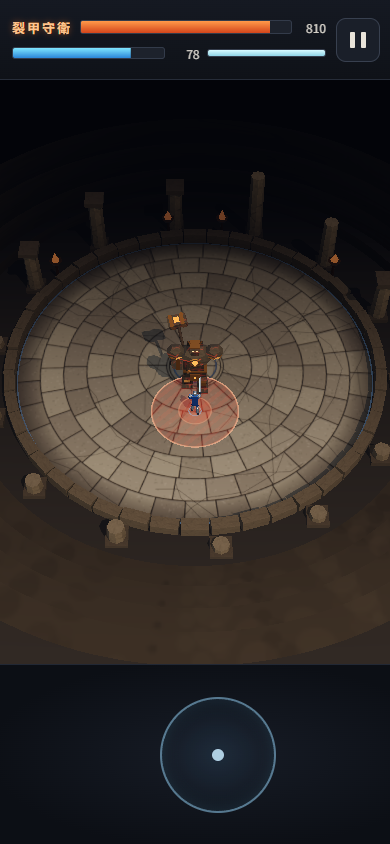
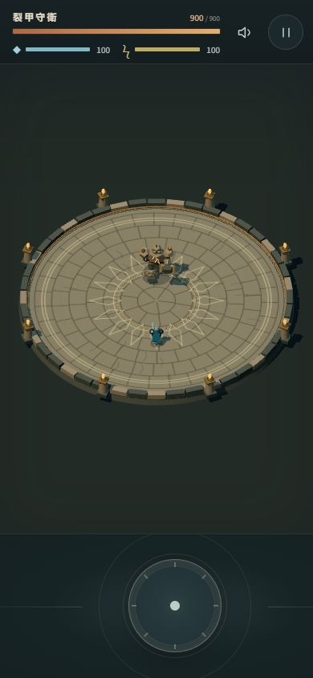

同一個起點。
三份可玩的答案。STAGE 1 · 實際遊戲截圖
三份可玩的答案。STAGE 1 · 實際遊戲截圖
01 / PLAY FIRST
唔使估，落場試。
三組 Stage 1 原版，同埋三組 Stage 2。
建議手機直屏，一次開一個遊戲。
第一次玩？睇操作
喺下方固定圓內短按放手出普攻；按住持續拖動就移動，停指就停步；快掃後放手翻滾。人物保留當前面向，唔會自動追住 Boss。Stage 1 未加入蓄力同技能。遊戲內保持簡潔，冇教學遮住畫面。
用瀏覽器「上一頁」返嚟揀另一組。若切換程式或轉橫屏後暫停，按「繼續」。
02 / THE BRIEF
一個場，一隻 Boss。
操作先係主角。
我想試嘅係：AI 可唔可以由一份清楚規格，整出有遊戲感、手機單手玩到嘅 3D 小品？唔只係一張靚截圖。
先整到好好玩
固定視角 3D 競技場、八方向移動、翻滾、三連普攻。Boss 會追人，有橫掃同重砸，出招前顯示危險範圍。加上血量、體力、暫停、勝負與重試。
再加深度與畫面
兩段蓄力、三招技能與冷卻、多條 Boss 血量、第二階段變化、PWA，同一套更強嘅造型、光影、動作及鏡頭要求。三組 Stage 2 已提供試玩。Opus 因 Devin 額度中斷，改由 Claude Code Opus 5.5 High 接續原有程式及測試；屬跨工具接續，並非一次不中斷完成。
03 / THE METHOD
規則先定，作品後睇。
同一份輸入
三組用相同 Stage 1 prompt。各自由獨立對話與工作目錄開始；完成前唔睇其他組成果。
自行檢查與修正
一次輸入包含修正循環。模型可以自己測試、修復；總控唔追加遊戲設計提示，亦唔代改遊戲程式。
先分開評，後對答案
總控先保存獨立觀察，Ken 再親手試玩，之後先比較兩份評測。公開頁列明模型名稱，所以唔係盲測。
公平性、用時同驗證限制
呢次係每個模型各一次嘅個人實驗，唔係統計 benchmark。三組都選 High，但唔代表相同推理量。Opus 用 Devin CLI，另外兩組用 Codex，工具介面與上下文條件有差異。
Astra 同 Sol 平行執行，共用本機資源；Opus Stage 1 較早獨立執行。工具批准等待會另列，唔可以用總經過時間直接判速度勝負。帳號額度亦唔等於單次 token 或實付成本。
總控已在桌面瀏覽器模擬手機尺寸試過操作與戰鬥流程；真手機觸感仍待實玩。Astra／Sol 勝利流程曾用診斷模式降低 Boss 血量驗證，唔代表已正常打完整場。呢度提供正常 production build，冇預設開作弊。
Stage 1 只調整 HTML 資源路徑；Stage 2 另調整 PWA、service worker 同註冊網址至各自子目錄。遊戲邏輯保持原版，原始及部署檔案 hash 分別保存。
04 / WORK IN PROGRESS
先玩，評分遲啲揭曉。
三組 Stage 1 已完成。完整評分、個人手感、用量紀錄與 Stage 2 進展會喺評測完成後更新到呢度；目前未公布排名。
返去揀遊戲 ↑